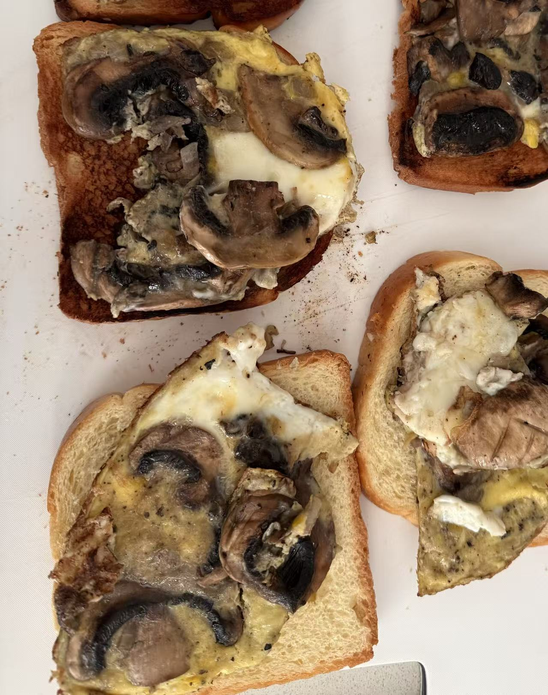
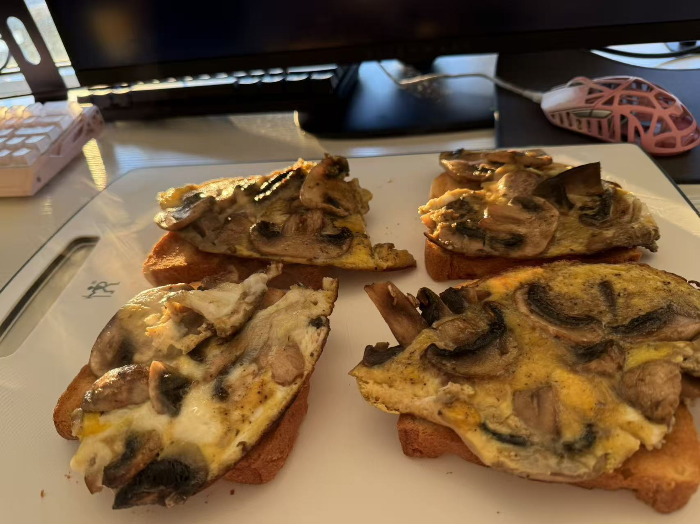

Ingredients:
Equipment: a bowl, fork, cutting board, knife, nonstick pan, and spatula.
Steps：
After you follow the instrustions take a picture when you are done.
outcome1 by Zoey...

outcome2 by jesse...
